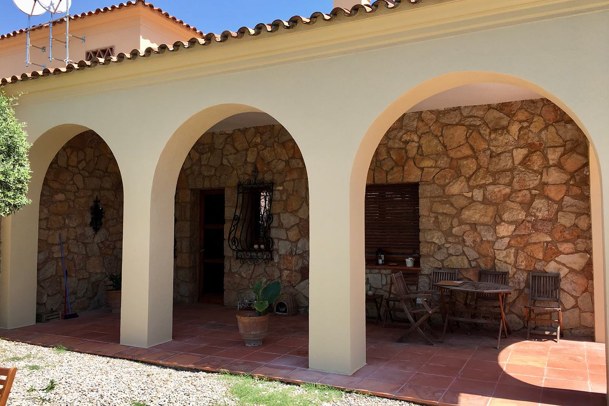

Façana a la Rambla de Catalunya, Barcelona
L’edifici va créixer en alçada i els elements nous de la façana havien de semblar de la mateixa pedra de Montjuïc que els antics. El nostre equip en va fer la imitació.
El nostre paperEl nostre equip va fer la imitació de pedra.
Què vam fer
L’edifici va guanyar alçada amb una remunta. Els elements nous de la façana havien de continuar la pedra existent sense que es notés on acabava l’edifici original i on començava l’ampliació.
El nostre equip hi va imitar la pedra de Montjuïc, perquè fossin iguals que els originals.
La pedra que calia igualar
La pedra de Montjuïc és la pedra sorrenca de les pedreres d’aquesta muntanya, amb què es va construir bona part de la Barcelona històrica. Té tons ocres i daurats, vetes i una superfície que amb els anys ha guanyat pàtina i desgast. Igualar-la no és pintar un color: és reproduir la variació de to d’una peça a una altra, la textura de la talla i el dibuix de les juntes.
Com s’enfoca una imitació així
La feina es decideix a partir de mostres fetes al mateix edifici, al costat de la pedra original i mirades amb llum natural a diverses hores. Primer s’ajusta la base (textura i color de fons), després les veladures que donen la variació de to i, finalment, les juntes i l’especejament, que han de coincidir amb els dels carreus existents.
Ho expliquem amb més detall a imitació de pedra i reintegracions.

Tens una obra semblant?
Envia’ns el que tinguis: fotos de l’estat actual, plànols o dues línies sobre el problema. Et direm com ho enfocaríem.